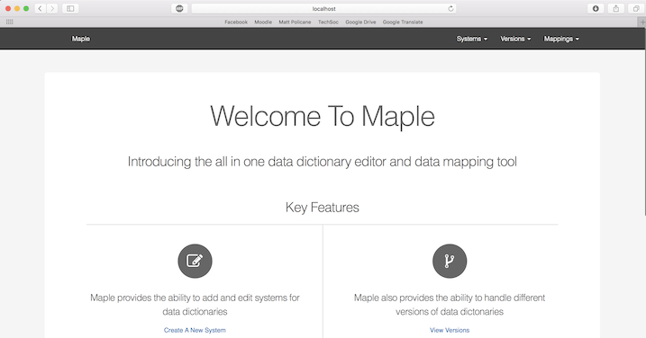
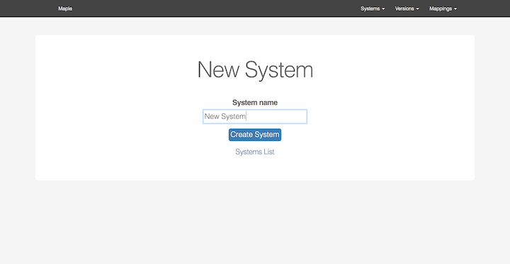
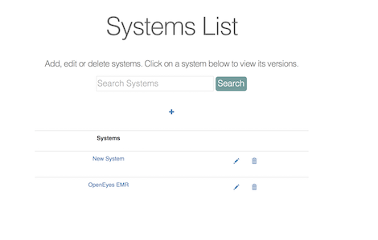
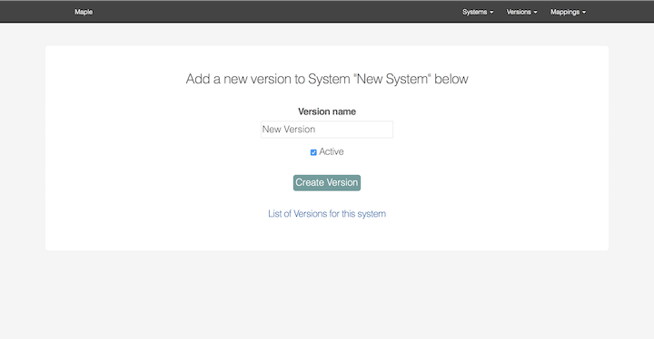
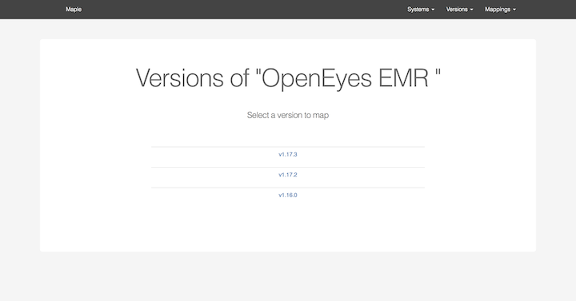
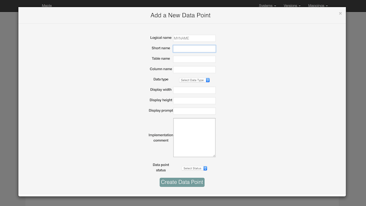
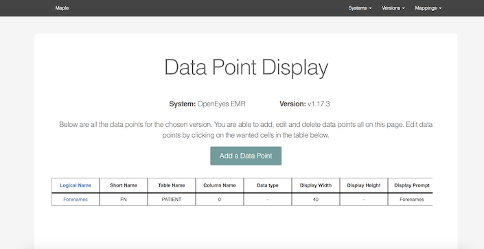
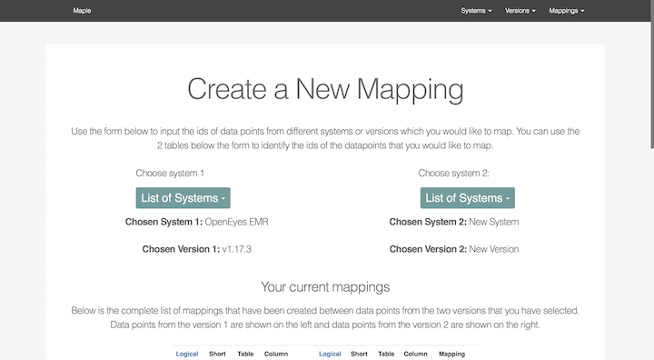
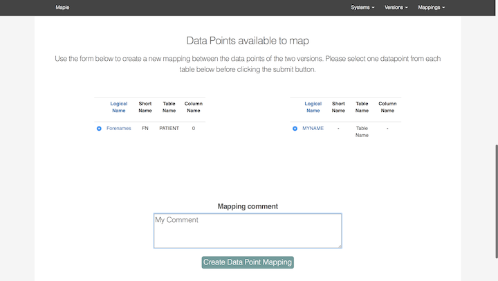
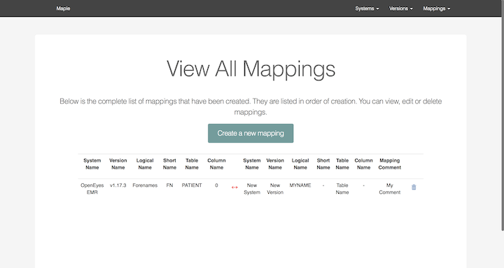

Final Delivery
Below you can see a sample of our final application through a series of screenshots. By looking at the screenshots below, you can see you we have progressed from our initial paper prototypes to our final product.

Maple's home page containing key features and shortcuts to those features

Ability to add a new system

List of all systems within Maple

Ability to add a new version for a system

List of all versions for a particular system

Data entry to add data points for a particular version

list of all data points for a particular version which can be edited

Main page to create a new mapping

Can choose data points for a chosen system and create a mapping

A list of all mappings within Maple